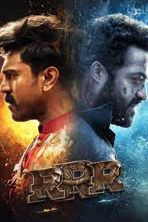

Rajamouli came across stories about the lives of Rama Raju and Bheem and connected the coincidences between them, imagining what would have happened had they met, and been friends. The film was formally announced in March 2018. Principal photography of the film began in November 2018 in Hyderabad which continued until August 2021, owing to delays caused by the COVID-19 pandemic. The film was shot extensively across India, with a few sequences in Ukraine and Bulgaria. The film's soundtrack and background score is composed by M. M. Keeravani with cinematography by K. K. Senthil Kumar and editing by A. Sreekar Prasad. Sabu Cyril is the film's production designer whilst V. Srinivas Mohan supervised the visual effects.
